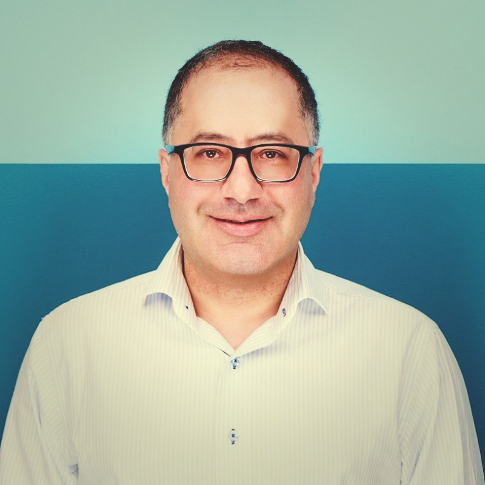

Senior Strategy & Insights Executive
Board Member · Advisor · Speaker
Turning complexity into strategy at the intersection of healthcare, technology, and business.
I help organizations identify new capabilities, strategic partnerships, and market opportunities where complex business, technology, and policy environments converge. Twenty+ years building and leading diverse, distributed teams with a deep commitment to mission impact.
Past & Present